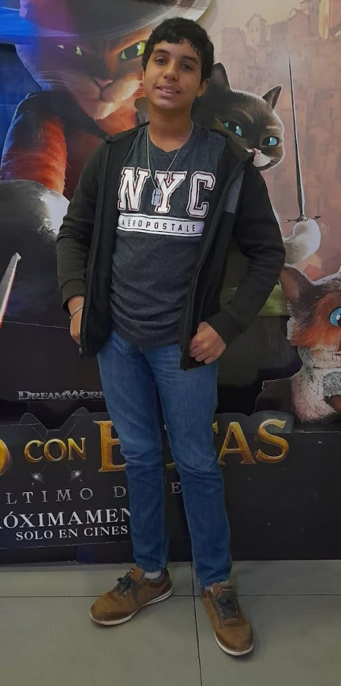

Joel Stiven Rodríguez
Joel Stiven Rodríguez 
Mi Vida
Descripcion, 5 Noviembre 2024
Fuè criado muy bien por sus padres a lo largo de su vida, al año y medio, aprendiò a hablar y desde entonces habla bastante.
Desde su niñez fuè muy buen estudiante pero con el paso de los años se fue deteriorando ese talento, aun asì sigue siendo un estudiante regular o normal, de todas formas fue teniendole un fuerte desagrado a la escuela, pero no es nada. Despues de todo los estudios no es lo que mas le ha apasionado en la vida.
Por su vida ha pasado por las muertes de seres queridos, se despidio de muchas amistades pero ganò otras que sirvieron para que este sea quien es.
Llegò a conocer un poco a su difunto abuelo Pablo Rodrìguez Almonte nacido en 19435 y fallecido en 2017, el pequeño Joel logrò conocer a fondo la vida de su abuelo.
Su padrino David Correa tambièn fallecerìa en Enero de 2021, le habìa enseñado bastante antes de irse pero no fuè suficiente.
Su abuela materna Rosa Evangelista Correa falleciò el 15 de Julio de 2023, siendo una persona que le enseñò mucho a Joel durante toda su vida hasta el dìa de su muerte.
Su tìa Niurka Socorro Rodrìguez nacida en 1972 y fallecida en Mayo de 2024, ella le habìa enseñado algunas cosas, no muchas debido a que ella vivìa en Estados Unidos.
Apariencia
Descripcion, 5 Noviembre 2024
Es un chico robusto de "5,7" pies de alto, un tono de piel mulato un poco claro, pelo negro con los ojos mas lindos de la escuela (segùn los demàs).
Tiene una personalidad muy "Extrovertida", le encanta participar en actividades con sus amigos, (segùn los demàs) tambien tiene una personalidad que lo hace:
- Amistoso
- Alegre
- Divertido
- Creativo
- Medio Hiperactivo
- Positivo/Negativo
- Relajado
- Buena Gente
- Rápido
- Tranquilo
- Etc...